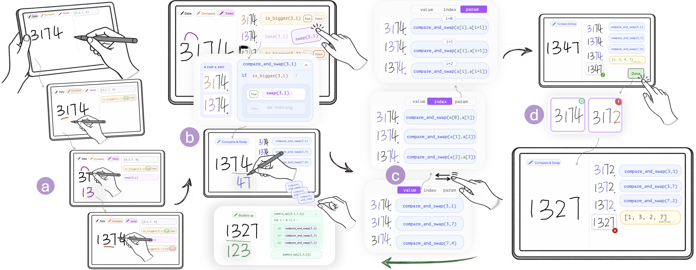
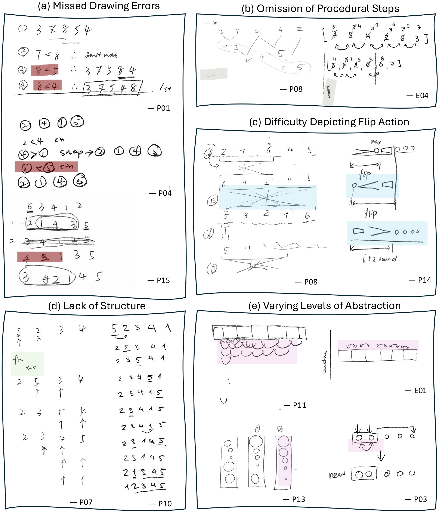

SketchMind: Toward Executable Pen-Based Sketching for Constructing Sorting Algorithms


When learning algorithms, we often begin with pen-and-paper tracing.
She writes an input: [5, 2, 3, 4, 1].
Compare 5 and 2, swap, rewrite the array… compare the next pair, swap, rewrite again.
Tools either run a program or record a trace.
- executable
- program given in advance
- learner observes, doesn't build
- editable, pen-first
- not executable
- no structure, no validation
- pen-first
- every stroke runs
- the algorithm is built from the trace
Supporting algorithmic reasoning through executable sketching

Pen strokes become executable operations.
Back in SketchMind: Alice’s array [3, 1, 7, 4], about to be sketched.
Data pen: 3 1 7 4 is recognized as an array.
Compare 3 and 1 → is_bigger(3, 1) = True.
Swap them: the numbers move; nothing is redrawn.
Compare 3 and 7 (False), then 7 and 4 (True).
Swap 7 and 4 → [1, 3, 4, 7]. Looks sorted.
Counterexamples as feedback.
One pass: [3, 1, 7, 4] → [1, 3, 4, 7]. Done?
Done → SMT: “what if we change 4 to 2?”
Her own steps on [3, 1, 7, 2] → [1, 3, 2, 7]: not fully sorted.
Find the nearest input that follows the same path but fails.
| abstract trace | [3, 1, 7, 4] | [3, 1, 7, 2] | ||
|---|---|---|---|---|
| if a[0] > a[1]: swap | 3 > 1 | ✓ | 3 > 1 | ✓ |
| if a[1] > a[2]: swap | 3 < 7 | × | 3 < 7 | × |
| if a[2] > a[3]: swap | 7 > 4 | ✓ | 7 > 2 | ✓ |
| if a[0] > a[1]: swap | not run | – | 1 < 3 | × |
| if a[1] > a[2]: swap | not run | – | 3 > 2 | ✓ |
| if a[2] > a[3]: swap | not run | – | 3 < 7 | × |
Merge trace steps into your own pens.
if is_bigger(a, b):
swap(a, b)if–else: drag the swap into the true branchfor i in 0 .. n-2:
compare_and_swap(a[i], a[i+1])one pass moves the max to the endfor p in 0 .. n-2:
bubble_up(a[0 .. n-1-p])nested loop, shrinking rangefind_max + flip → flip_to_front. The max index found by the first step sets the range of the flip.Merge steps into a new pen.
Back to her steps: compare, swap, compare, compare, swap.
Drop swap into the True branch of is_bigger → a Compare & Swap pen; the whole pass folds into compare_and_swap blocks.
One procedure, three views.
value → index → param
value: compare_and_swap(3, 1)
index: compare_and_swap(a[0], a[1]), positions in the array
param: compare_and_swap(a[i], a[i+1]), the pattern
Fix the plan, not the example.
Three compare_and_swap blocks on [3, 1, 7, 2].
Drag them together → bubble_up, for i = 0 to 2: a new Bubble up pen.
Bubble up on [1, 3, 2] → [1, 2, 3, 7].
And on [1, 2].
Done → “All comparisons are correct. Your algorithm is verified!”
Three layers
- Data pen: handwritten digits → array slots
- Operation pens: the pen picks the operation, the stroke picks the elements
- Gestures: merge / split cards
- Versioned step sequence
- Insert / delete → downstream recompute
- Multi-instance replay with original ink
- Compile trace → SMT-LIB
- Check correctness
- Find the closest failing input
Pancake Sort: new primitives, same workflow.
Customized primitives: find_max and flip.
find_max on [2, 4, 1, 3], flip the 4 to the front, flip it to the end.
The steps merge into flip_max_to_front / flip_max_to_end pens.
Applied round by round → [1, 2, 3, 4].
Merged into a pancake_sort pen. Done → array sorted.
5 instructors (secondary school, youth workshops, university)
In person · 11″ iPad Pro + Apple Pencil · ~60 min
- familiar algorithm
- paper sketch first
- 4 guided tasks, one per feature + ratings
- unfamiliar to everyone, including instructors
- paper sketch first, then free construction
- think-aloud; post-task questions
- UMUX-Lite
- NASA-TLX
- interview

Feature ratings 7-point Likert, N = 20
usefulness 6.25 · usability 5.85
What participants said
"Saves you the process of calculating the loop."P14
A pen is "a function" you can define, then "use directly."P4, P7
Turns an "instantiated exercise into an abstract learning experience."P8
"Gives the wrong example so you can locate where logic breaks."P7
"Very good for introductory learning." — E5
Toward a general SketchMind
- Bubble → Pancake reused the infrastructure; it added range selection, find_max and flip.
- Learners' own visual language (bars, circles, bubbles) is a cue we don't use yet.
Limitations
- Proof of concept: two array-based sorting algorithms with local, sequential operations.
- Learners compose pens, but cannot define new primitives.
- The minimal change is not always the most instructive one.
- We measured usability, not learning outcomes. No transfer, retention, or control group.
Could an LLM find the counterexample instead?preliminary
| method | correct (50 Bubble Sort cases: 42 buggy + 8 correct) | controls → "none" | median time |
|---|---|---|---|
| SMT (Z3) | 43 / 50 | 8 / 8 | 0.3 s |
| gemini-3.8-flash | 50 / 50 | 8 / 8 | 15.5 s |
| gpt-5.5 | 50 / 50 | 8 / 8 | 18.7 s |
| gpt-4o | 9 / 50 | 0 / 8 | 1.1 s |
Strong LLMs answer correctly but are ~50× slower, and their counterexamples tend to sit further from the learner's example.
Supporting Algorithmic Reasoning through Executable Sketching
 SketchMindUIST 2026
SketchMindUIST 2026